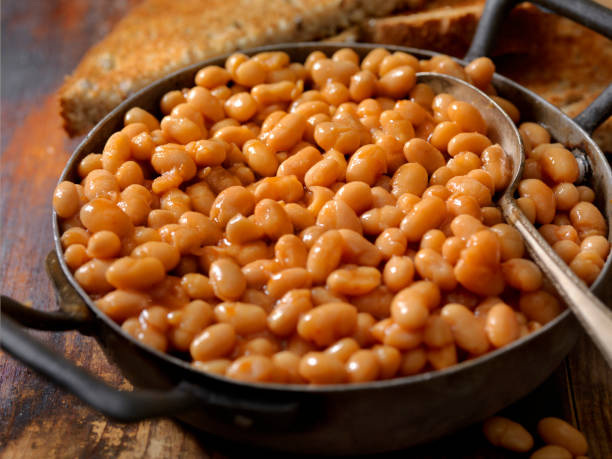

Beans

Description
Beans is very common food in africa especially nigeria. Beans is known to be an energy giver. in nigeria people love beans.
Ingredients
- Beans
- Red Oil
- Dry fish
- Onions
- Grinded Pepper
- Spices
- Water
Steps
- Pick and separate dirts from beans
- Add beans to pot of water and boil
- Immediately beans boil drain water and boil again
- Wash and add dry fish
- Once beans is soft, add red oil
- Also add onion and spices
- Add grinded pepper
- Allow for some minutes and serve hot